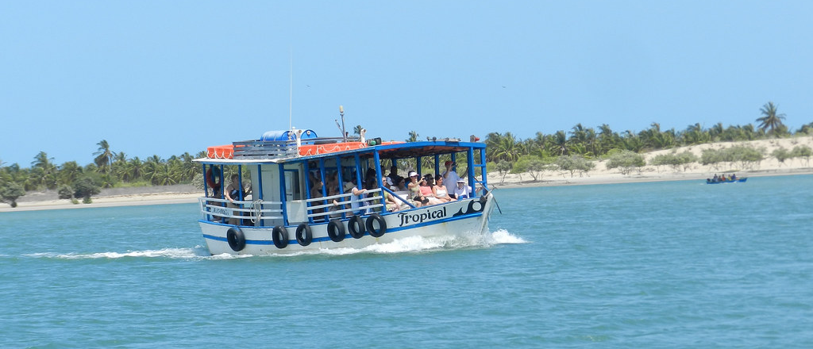
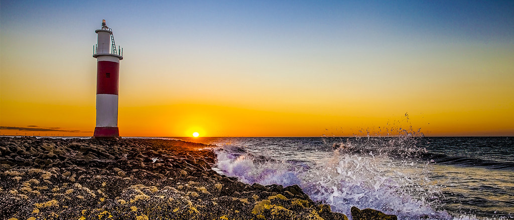

SENDO UM TREICHO DE TERRA paralelA ao litoral, O AMBIENTE mescla elementos dE cerrado e sertão. SE FAZENDORAROS AQUELES QUE destoariam da paisagem. Avançando PARA o oeste, NÃO distanciar-se do litoral, ao norte, a estrada deixa entrever, nas margens, as típicas plantas baixas e rasteiras que reinam longe das praias nordestinas, uma vegetação escassa que se estende irregularmente em direção à praia e ao mar JUNTO convivendo com raros coqueiros e variedades diversas de cactáceas. TODA VIA PARA CHEGAR A TAL LOCAL, SE FAZ NECESSÁRIO TOMAR VIAGEM POR UMA BALSA, AUMENTANDO A DIVERSIDADE DA VIAGEM, TENDO PARTE EM MAR, PARTE EM TERRA.
NO LOCAL TAMBÉM É POSSÍVEL VER E ATÉ MESMO VISITAR UM PEQUENO FAROL PRESENTE NO LOCAL, E DEILEITAR-SE COM UM MAGNÍCO POR DO SOL.
